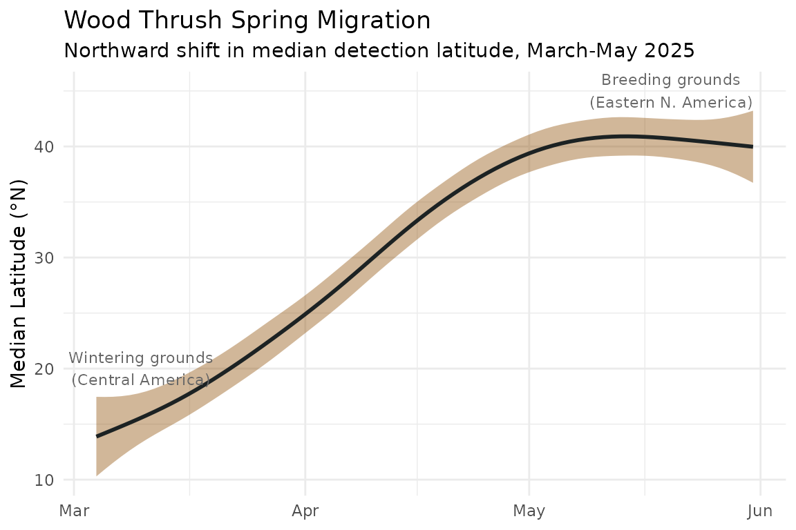
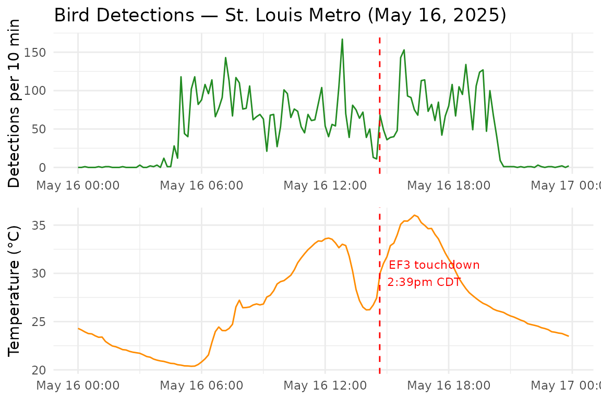

Example Applications
example-applications.RmdOverview
This vignette demonstrates three applied analyses using
birdweatheR: tracking migratory phenology at continental
scale, characterizing activity timing in relation to the human
footprint, and studying behavioral responses to the 2024 total solar
eclipse. Each example is self-contained and builds on the functions
described in the Getting Started
vignette.
Migration Phenology
One of the most powerful applications of BirdWeather data is tracking the phenology of migratory species at continental scale. Because BirdWeather stations operate continuously, the dataset captures high-temporal-resolution information on the northward progression of spring migrants.
Here we use Wood Thrush (Hylocichla mustelina), a
long-distance Neotropical migrant that winters in Central America and
breeds across eastern North America, to illustrate how
get_detections() can reveal migratory timing across
latitudes.
The woth dataset bundled with this package contains
569,000 Wood Thrush detections from North American BirdWeather stations
during spring migration (March–May 2025), filtered to detections with
confidence ≥ 0.6.
library(birdweatheR)
library(data.table)
library(ggplot2)
data(woth)
# To reproduce this dataset from the API:
# connect_birdweather()
# woth_id <- find_species("Wood Thrush")$species_id
# woth <- get_detections(
# from = "2025-03-01T00:00:00.000Z",
# to = "2025-05-31T00:00:00.000Z",
# species_ids = woth_id,
# confidence_gte = 0.6,
# continents = "North America"
# )We calculate the median latitude of all detections for each day. As birds depart their Central American wintering grounds and move northward, the median latitude of detections shifts from roughly 15°N in early March to over 40°N by mid-May:
woth[, date := as.Date(timestamp)]
median_lat <- woth[, .(median_lat = median(station_lat, na.rm = TRUE)),
by = date]
ggplot(median_lat, aes(x = date, y = median_lat)) +
geom_smooth(method = "gam", color = "#1C2223", fill = "#8D4C00") +
annotate("text",
x = as.Date("2025-03-10"),
y = 20,
label = "Wintering grounds\n(Central America)",
size = 3, color = "gray40") +
annotate("text",
x = as.Date("2025-05-20"),
y = 45,
label = "Breeding grounds\n(Eastern N. America)",
size = 3, color = "gray40") +
labs(
title = "Wood Thrush Spring Migration",
subtitle = "Northward shift in median detection latitude, March-May 2025",
x = NULL,
y = "Median Latitude (°N)",
) +
theme_minimal()
The smooth northward shift from ~15°N to ~41°N over approximately ten weeks closely tracks published Wood Thrush migration chronology, demonstrating that BirdWeather acoustic detections can recover continent-scale movement patterns from passively collected data alone.
Activity Timing Along a Human Footprint Gradient
Beyond tracking where birds are, BirdWeather’s continuous monitoring
enables examination of when birds are active — and how that
timing varies across gradients of human disturbance. Here we use the
bundled woth dataset to model the diel activity pattern of
Wood Thrush across a gradient of the Human Footprint Index (HFI; Venter
et al. 2016), a composite measure of anthropogenic pressure that
integrates land use, human access, and infrastructure.
The response variable is binary: whether a given 30-minute interval at a given station contained at least one Wood Thrush detection. We model this probability as a function of time of day using harmonic (Fourier) terms within a binomial mixed model, with random effects for station. This approach — described in detail in Pease & Gilbert (2025) — captures the full shape of the diel activity curve rather than reducing it to a single peak hour.
1. Prepare station-level occasion histories
We start from the bundled woth detections, restricting
to PUC stations that were active for at least 30 days across the
March–May 2025 window. For each station, we construct a complete grid of
30-minute intervals and mark each interval as a detection (1) or
non-detection (0):
library(lubridate)
library(dplyr)
# Restrict to PUC stations active for >= 30 days
woth[, date := as.IDate(timestamp)]
woth[, n_days := uniqueN(date), by = station_id]
woth_puc <- woth[station_type == "puc" & n_days > 30]
# Parse timestamps and look up local timezone per station
d <- woth_puc[, .(timestamp, station_id, station_lat, station_lon)]
d[, zone := lutz::tz_lookup_coords(station_lat, station_lon, method = "fast")]
d[, timestamp := lubridate::parse_date_time(timestamp, orders = "ymdHMSz")]
d[, date := as.Date(timestamp)]
d <- d[!is.na(timestamp)]
station_tz <- d[, .(station_lat = station_lat[1],
station_lon = station_lon[1],
station_zone = zone[1]),
by = station_id]
min_date <- min(d$date)
max_date <- max(d$date)
# Build complete 30-minute occasion grid per station
occasions <- vector("list", nrow(station_tz))
for (i in seq_len(nrow(station_tz))) {
tz_i <- station_tz$station_zone[i]
occasions[[i]] <- data.frame(
station_id = station_tz$station_id[i],
start = seq(
from = lubridate::ymd_hms(paste(min_date, "00:00:00"), tz = tz_i),
to = lubridate::ymd_hms(paste(max_date, "00:00:00"), tz = tz_i),
by = "30 min"
)
) |>
dplyr::mutate(end = c(start[2:length(start)],
start[length(start)] + lubridate::minutes(30)))
}
occ <- data.table::rbindlist(occasions)
occ[, capt := 0L]
occ[, start := lubridate::with_tz(start, "UTC")]
occ[, end := lubridate::with_tz(end, "UTC")]
# Mark intervals containing >= 1 detection
occ[d, capt := 1L,
on = .(station_id,
start <= timestamp,
end > timestamp)]
# Interval midpoint and integer time-of-day bin (1-48)
occ[, mid := start + as.numeric(difftime(end, start, units = "secs")) / 2]
occ[, mid_time := as.numeric(difftime(mid, lubridate::floor_date(mid, "day"),
units = "mins"))]
# Summarise success/failure by station and time-of-day bin
final <- occ[, .(success = sum(capt),
failure = .N - sum(capt)),
by = .(station_id, mid_time)]
final[, time := .GRP, by = mid_time] # integer 1-48 circular predictor
# Join station coordinates
final <- station_tz[, .(station_id, station_lat, station_lon)][final, on = "station_id"]2. Extract Human Footprint Index at station locations
The HFI raster (Venter et al. 2016) is downloaded once via
geodata and values are extracted at each PUC station
location using terra:
library(terra)
library(geodata)
# Download HFI raster (cached after first run)
hfi_rast <- geodata::footprint(year = 2009, path = tempdir())
# Extract HFI at station locations
stations_vect <- terra::vect(as.data.frame(station_tz),
geom = c("station_lon", "station_lat"),
crs = "EPSG:4326")
station_tz$hfi <- terra::extract(hfi_rast, stations_vect)[, 2]
# Join HFI onto modelling dataset
final <- final[station_tz[, .(station_id, hfi)], on = "station_id"]3. Fit the circular mixed model
We fit a binomial GLMM with harmonic terms for time of day using
GLMMadaptive. The fixed effects include two harmonics
capturing daily and sub-daily cycles. To examine how activity timing
varies with human footprint, HFI can be included as an interaction term
in the fixed effects.Random effects allow each station’s activity curve
to deviate from the population mean. Model fitting takes several minutes
depending on hardware:
library(GLMMadaptive)
m1 <- GLMMadaptive::mixed_model(
fixed = cbind(success, failure) ~
hfi * (
cos(2 * pi * time / 48) + sin(2 * pi * time / 48) +
cos(2 * pi * time / 24) + sin(2 * pi * time / 24)
),
random = ~ cos(2 * pi * time / 48) + sin(2 * pi * time / 48) +
cos(2 * pi * time / 24) + sin(2 * pi * time / 24) || station_id,
data = final,
family = binomial(),
iter_EM = 0
)4. Visualize the marginal activity curve
Marginal curves predicted at low and high HFI quantiles then reveal whether urbanization alters the shape or timing of the diel activity pattern.
newdat <- expand.grid(
time = seq(0, 48, length.out = 96), hfi = quantile(final$hfi, probs = c(0.1, 0.9))
)
marg_eff <- GLMMadaptive::effectPlotData(m2, newdat, marginal = TRUE) |>
dplyr::mutate(across(pred:upp, plogis)) |>
dplyr::mutate(time = time / 2)
marg_eff$hfi <- factor(marg_eff$hfi,
labels = c("Low human footprint", "High human footprint"))
ggplot(marg_eff, aes(
x = time,
y = pred,
color = factor(hfi),
fill = factor(hfi)
)) +
geom_ribbon(aes(ymin = low, ymax = upp), alpha = 0.25, color = NA) +
geom_line(linewidth = 1.5) +
scale_x_continuous(limits = c(0, 24),
breaks = c(0, 4, 8, 12, 16, 20, 24)) +
labs(x = "Time of Day (Hour)",
y = "Probability of activity",
color = "HFI",
fill = "HFI") +
theme_minimal() +
theme(
axis.line = element_line(color = "black", linewidth = 0.2),
axis.title = element_text(color = "black", size = 11),
axis.text = element_text(color = "black", size = 10)
)Astronomical Events
In addition to environmental sensors, PUCs record light levels at the sensor, including broadband light levels, near-infrared light, and the ability to isolate bands f1–f8. The combination of acoustic detections and on-board light sensors makes BirdWeather data uniquely suited to studying how birds respond to rapid changes in light levels — including those caused by solar eclipses.
The April 8, 2024 Total Solar Eclipse
On April 8, 2024, a total solar eclipse crossed North America along a path running from Texas northeast through the Ohio Valley. At stations within the path of totality, daylight was completely extinguished for up to four minutes around 2:00 pm local time.
The total_eclipse dataset contains detections from PUC
stations within an eclipse path bounding box during April 8, 2024. The
eclipse_light_data dataset contains concurrent light sensor
readings from those same stations.
# To reproduce from the API:
# connect_birdweather()
# total_eclipse <- get_detections(
# from = "2024-04-08T00:00:00.000Z",
# to = "2024-04-09T00:00:00.000Z",
# ne = list(lat = 42.639347, lon = -79.672852),
# sw = list(lat = 34.331340, lon = -94.570313),
# confidence_gte = 0.6,
# station_types = "puc"
# )
#
# station_ids <- unique(total_eclipse$station_id)
# eclipse_light_data <- get_light_data(
# station_id = station_ids,
# from = "2024-04-08T00:00:00.000Z",
# to = "2024-04-09T00:00:00.000Z"
# )Rather than relying on an external shapefile, we use the PUC light sensor data itself to identify stations that experienced totality — defined here as stations where broadband light levels dropped below 10% of their morning baseline during the eclipse window:
eclipse_light_data[, datetime := as.POSIXct(timestamp,
format = "%Y-%m-%dT%H:%M:%S", tz = "America/Chicago")]
total_eclipse[, datetime := as.POSIXct(timestamp,
format = "%Y-%m-%dT%H:%M:%S", tz = "America/Chicago")]
# Morning baseline (10:00-11:00 am)
station_baselines <- eclipse_light_data[
datetime >= as.POSIXct("2024-04-08 10:00:00", tz = "America/Chicago") &
datetime <= as.POSIXct("2024-04-08 11:00:00", tz = "America/Chicago"),
.(baseline = mean(clear, na.rm = TRUE)), by = station_id]
# Minimum light during totality window (1:45-2:15 pm)
station_min <- eclipse_light_data[
datetime >= as.POSIXct("2024-04-08 13:45:00", tz = "America/Chicago") &
datetime <= as.POSIXct("2024-04-08 14:15:00", tz = "America/Chicago"),
.(min_clear = min(clear, na.rm = TRUE)), by = station_id]
totality_ids <- merge(station_baselines, station_min, by = "station_id")[
min_clear / baseline < 0.10, station_id]
message(length(totality_ids), " stations identified within path of totality")Of the stations in the bounding box, 25 experienced a light drop of >90%, confirming they were likely within the path of totality.
We then compare broadband light levels with Common Grackle (Quiscalus quiscula) vocalization rates across these stations. Common Grackle is a highly vocal diurnal species with peak activity during midday — making it a sensitive indicator of unusual light changes:
# 5-minute bin helper
bin5 <- function(dt) {
as.POSIXct(
paste0(format(dt, "%Y-%m-%d %H:"),
sprintf("%02d", (as.integer(format(dt, "%M")) %/% 5) * 5),
":00"),
tz = "America/Chicago"
)
}
# Filter to daytime window and totality stations
eclipse_day_light <- eclipse_light_data[
station_id %in% totality_ids &
datetime >= as.POSIXct("2024-04-08 10:00:00", tz = "America/Chicago") &
datetime <= as.POSIXct("2024-04-08 17:00:00", tz = "America/Chicago")
]
eclipse_day_dets <- total_eclipse[
station_id %in% totality_ids &
datetime >= as.POSIXct("2024-04-08 10:00:00", tz = "America/Chicago") &
datetime <= as.POSIXct("2024-04-08 17:00:00", tz = "America/Chicago") &
common_name == "Common Grackle"
]
# Bin to 5 minutes
light_bins <- eclipse_day_light[,
.(mean_clear = mean(clear, na.rm = TRUE)),
by = .(bin = bin5(datetime))]
det_bins <- eclipse_day_dets[,
.(det_count = .N),
by = .(bin = bin5(datetime))]
library(cowplot)
p1 <- ggplot(det_bins, aes(x = bin, y = det_count)) +
geom_line(color = "purple", alpha = 0.2) +
geom_smooth(color = "purple", se = FALSE, span = 0.15) +
geom_vline(
xintercept = as.POSIXct("2024-04-08 13:59:00", tz = "America/Chicago"),
color = "gray20", linetype = "dashed"
) +
annotate("text",
x = as.POSIXct("2024-04-08 13:59:00", tz = "America/Chicago"),
y = max(det_bins$det_count, na.rm = TRUE) * 0.95,
label = "Totality", color = "gray20", hjust = -0.1, size = 3) +
labs(
x = NULL,
y = "Detections per 5 min"
) +
theme_minimal()
p2 <- ggplot(light_bins, aes(x = bin, y = mean_clear)) +
geom_line(color = "goldenrod") +
geom_vline(
xintercept = as.POSIXct("2024-04-08 13:59:00", tz = "America/Chicago"),
color = "gray20", linetype = "dashed"
) +
labs(
x = NULL,
y = "Clear Light (counts)",
) +
theme_minimal()
out <- plot_grid(p1, p2, ncol = 1, align = "v")
out_file <- tempfile("eclipse_example", fileext = ".png")
save_plot(out_file, out, ncol = 1, base_asp = 1.1)The light sensor data clearly captures the eclipse — broadband light levels collapse to near zero at totality before recovering to normal afternoon levels. The concurrent reduction in Common Grackle vocalizations illustrates how BirdWeather’s integrated acoustic and environmental sensing can be used to study behavioral responses to rapid environmental perturbations.
Weather Events and Sensor Data
The May 15–16, 2025 Tornado Outbreak
On May 15–16, 2025, a major tornado outbreak produced 61 tornadoes across the Midwest and Ohio Valley in the United States, including a destructive EF3 tornado that struck the Greater St. Louis metropolitan area at 2:39 pm CDT on May 16. The outbreak caused 26 deaths and approximately $5.9 billion in damages.
The stl_storm_May2025 dataset contains detections from
eight PUC stations in the St. Louis metro area during May 12–18, 2025.
The stl_env_May2025 dataset contains concurrent
environmental sensor readings from those same stations.
# To reproduce from the API:
# connect_birdweather()
# stl_storm_may2025 <- get_detections(
# from = "2025-05-12T00:00:00.000Z",
# to = "2025-05-18T00:00:00.000Z",
# ne = list(lat = 38.95, lon = -89.85),
# sw = list(lat = 38.35, lon = -90.75),
# station_types = "puc"
# )
#
# station_ids <- unique(stl_storm_May2025$station_id)
# stl_env_may2025 <- get_environment_data(
# station_id = station_ids,
# from = "2025-05-14T00:00:00.000Z",
# to = "2025-05-17T00:00:00.000Z"
# )We focus on May 16 itself, plotting bird detections and mean temperature across all eight stations in 10-minute intervals. The sharp temperature drop associated with the tornado’s passage is clearly visible, coinciding with a spike in acoustic detections around the time of EF3 touchdown:
# Parse detection timestamps
stl_storm_May2025[, datetime := as.POSIXct(timestamp,
format = "%Y-%m-%dT%H:%M:%S", tz = "America/Chicago")]
# 10-minute detection counts
ten_min_dets <- stl_storm_May2025[, .(det_count = .N),
by = .(interval = as.POSIXct(format(
datetime - as.numeric(datetime) %% 600,
"%Y-%m-%d %H:%M:%S"), tz = "America/Chicago"))]
stl_env_May2025[, datetime := as.POSIXct(timestamp,
format = "%Y-%m-%dT%H:%M:%S", tz = "America/Chicago")]
# 10-minute temperature averages
ten_min_env <- stl_env_May2025[, .(mean_temp = mean(temperature, na.rm = TRUE)),
by = .(interval = as.POSIXct(format(
datetime - as.numeric(datetime) %% 600,
"%Y-%m-%d %H:%M:%S"), tz = "America/Chicago"))]
# Merge and filter to May 16
ten_min_combined <- merge(ten_min_dets, ten_min_env, by = "interval", all = TRUE)
may16_start <- as.POSIXct("2025-05-16 00:00:00", tz = "America/Chicago")
may16_end <- as.POSIXct("2025-05-16 23:59:59", tz = "America/Chicago")
ten_min_may16 <- ten_min_combined[interval >= may16_start & interval <= may16_end]
# Intervals with no detections should be 0, not NA
ten_min_may16[is.na(det_count), det_count := 0]
library(cowplot)
p1 <- ggplot(ten_min_may16, aes(x = interval, y = det_count)) +
geom_line(color = "forestgreen") +
geom_vline(xintercept = as.POSIXct("2025-05-16 14:39:00", tz = "America/Chicago"),
color = "red", linetype = "dashed") +
labs(title = "Bird Detections — St. Louis Metro (May 16, 2025)",
x = NULL, y = "Detections per 10 min") +
theme_minimal()
temp_max <- max(ten_min_may16$mean_temp, na.rm = TRUE)
if (!is.finite(temp_max)) temp_max <- 25
p2 <- ggplot(ten_min_may16, aes(x = interval, y = mean_temp)) +
geom_line(color = "darkorange") +
geom_vline(xintercept = as.POSIXct("2025-05-16 14:39:00", tz = "America/Chicago"),
color = "red", linetype = "dashed") +
annotate("text", x = as.POSIXct("2025-05-16 14:39:00", tz = "America/Chicago"),
y = 30,
label = "EF3 touchdown\n2:39pm CDT",
color = "red", hjust = -0.1, size = 3) +
labs(x = NULL, y = "Temperature (°C)") +
theme_minimal()
plot_grid(p1, p2, ncol = 1, align = "v")
The get_environment_data() function retrieves sensor
readings for any PUC station and time window, enabling researchers to
pair environmental context with acoustic detections at fine temporal
resolution.
Further Reading
For an example of large-scale ecological synthesis using BirdWeather detections, see Pease & Gilbert (2025), who used over 60 million BirdWeather detections across 583 diurnal species to demonstrate that light pollution prolongs avian vocal activity by up to 50 minutes in the brightest landscapes (Science, 387, 848–853).
Additionally, a full analysis of the 2023 Annular and 2024 Total Eclipses using data from the Eclipse Soundscapes project and BirdWeather can be found in Gilbert et al., 2026.
For questions, bug reports, or feature requests, please visit the package repository at github.com/BrentPease1/birdweatheR.